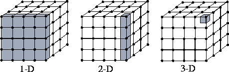
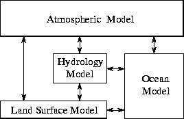

![[DBPP]](pictures//asm_color_tiny.gif)


![[Search]](pictures//search_motif.gif)
The partitioning stage of a design is intended to expose opportunities for parallel execution. Hence, the focus is on defining a large number of small tasks in order to yield what is termed a fine-grained decomposition of a problem. Just as fine sand is more easily poured than a pile of bricks, a fine-grained decomposition provides the greatest flexibility in terms of potential parallel algorithms. In later design stages, evaluation of communication requirements, the target architecture, or software engineering issues may lead us to forego opportunities for parallel execution identified at this stage. We then revisit the original partition and agglomerate tasks to increase their size, or granularity. However, in this first stage we wish to avoid prejudging alternative partitioning strategies.
A good partition divides into small pieces both the computation associated with a problem and the data on which this computation operates. When designing a partition, programmers most commonly first focus on the data associated with a problem, then determine an appropriate partition for the data, and finally work out how to associate computation with data. This partitioning technique is termed domain decomposition. The alternative approach---first decomposing the computation to be performed and then dealing with the data---is termed functional decomposition. These are complementary techniques which may be applied to different components of a single problem or even applied to the same problem to obtain alternative parallel algorithms.
In this first stage of a design, we seek to avoid replicating computation and data; that is, we seek to define tasks that partition both computation and data into disjoint sets. Like granularity, this is an aspect of the design that we may revisit later. It can be worthwhile replicating either computation or data if doing so allows us to reduce communication requirements.
In the domain decomposition approach to problem partitioning, we seek first to decompose the data associated with a problem. If possible, we divide these data into small pieces of approximately equal size. Next, we partition the computation that is to be performed, typically by associating each operation with the data on which it operates. This partitioning yields a number of tasks, each comprising some data and a set of operations on that data. An operation may require data from several tasks. In this case, communication is required to move data between tasks. This requirement is addressed in the next phase of the design process.
The data that are decomposed may be the input to the program, the output computed by the program, or intermediate values maintained by the program. Different partitions may be possible, based on different data structures. Good rules of thumb are to focus first on the largest data structure or on the data structure that is accessed most frequently. Different phases of the computation may operate on different data structures or demand different decompositions for the same data structures. In this case, we treat each phase separately and then determine how the decompositions and parallel algorithms developed for each phase fit together. The issues that arise in this situation are discussed in Chapter 4.
Figure 2.2 illustrates domain decomposition in a simple problem involving a three-dimensional grid. (This grid could represent the state of the atmosphere in a weather model, or a three-dimensional space in an image-processing problem.) Computation is performed repeatedly on each grid point. Decompositions in the x , y , and/or z dimensions are possible. In the early stages of a design, we favor the most aggressive decomposition possible, which in this case defines one task for each grid point. Each task maintains as its state the various values associated with its grid point and is responsible for the computation required to update that state.

Figure 2.2: Domain decompositions for a problem involving a
three-dimensional grid. One-, two-, and three-dimensional
decompositions are possible; in each case, data associated with a
single task are shaded. A three-dimensional decomposition offers the
greatest flexibility and is adopted in the early stages of a
design.
Functional decomposition represents a different and complementary way of thinking about problems. In this approach, the initial focus is on the computation that is to be performed rather than on the data manipulated by the computation. If we are successful in dividing this computation into disjoint tasks, we proceed to examine the data requirements of these tasks. These data requirements may be disjoint, in which case the partition is complete. Alternatively, they may overlap significantly, in which case considerable communication will be required to avoid replication of data. This is often a sign that a domain decomposition approach should be considered instead.
While domain decomposition forms the foundation for most parallel algorithms, functional decomposition is valuable as a different way of thinking about problems. For this reason alone, it should be considered when exploring possible parallel algorithms. A focus on the computations that are to be performed can sometimes reveal structure in a problem, and hence opportunities for optimization, that would not be obvious from a study of data alone.
As an example of a problem for which functional decomposition is most appropriate, consider Algorithm 1.1. This explores a search tree looking for nodes that correspond to ``solutions.'' The algorithm does not have any obvious data structure that can be decomposed. However, a fine-grained partition can be obtained as described in Section 1.4.3. Initially, a single task is created for the root of the tree. A task evaluates its node and then, if that node is not a leaf, creates a new task for each search call (subtree). As illustrated in Figure 1.13, new tasks are created in a wavefront as the search tree is expanded.

Figure 2.3: Functional decomposition in a computer model of
climate. Each model component can be thought of as a separate task,
to be parallelized by domain decomposition. Arrows represent
exchanges of data between components during computation: the
atmosphere model generates wind velocity data that are used by the
ocean model, the ocean model generates sea surface temperature data
that are used by the atmosphere model, and so on.
Functional decomposition also has an important role to play as a program structuring technique. A functional decomposition that partitions not only the computation that is to be performed but also the code that performs that computation is likely to reduce the complexity of the overall design. This is often the case in computer models of complex systems, which may be structured as collections of simpler models connected via interfaces. For example, a simulation of the earth's climate may comprise components representing the atmosphere, ocean, hydrology, ice, carbon dioxide sources, and so on. While each component may be most naturally parallelized using domain decomposition techniques, the parallel algorithm as a whole is simpler if the system is first decomposed using functional decomposition techniques, even though this process does not yield a large number of tasks (Figure 2.3). This issue is explored in Chapter 4.
The partitioning phase of a design should produce one or more possible decompositions of a problem. Before proceeding to evaluate communication requirements, we use the following checklist to ensure that the design has no obvious flaws. Generally, all these questions should be answered in the affirmative.
Answers to these questions may suggest that, despite careful thought in this and subsequent design stages, we have a ``bad'' design. In this situation it is risky simply to push ahead with implementation. We should use the performance evaluation techniques described in Chapter 3 to determine whether the design meets our performance goals despite its apparent deficiencies. We may also wish to revisit the problem specification. Particularly in science and engineering applications, where the problem to be solved may involve a simulation of a complex physical process, the approximations and numerical techniques used to develop the simulation can strongly influence the ease of parallel implementation. In some cases, optimal sequential and parallel solutions to the same problem may use quite different solution techniques. While detailed discussion of these issues is beyond the scope of this book, we present several illustrative examples of them later in this chapter.
© Copyright 1995 by Ian Foster